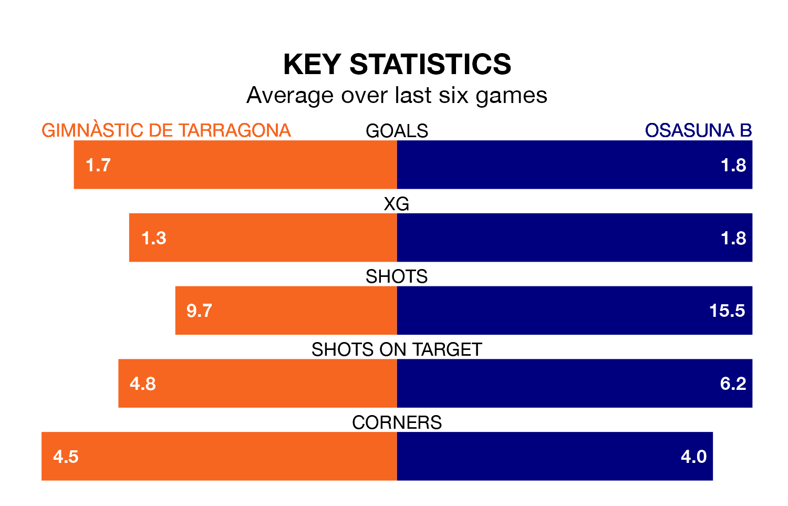

Osasuna B face a challenge to maintain their high-scoring form away against a tight Gimnàstic de Tarragona defence on Sunday.
With 28 goals in 20 games, Osasuna B are the third-highest scorers in Primera Division RFEF Group 1 ahead of the 5.30pm kick-off at Nou Estadi de Tarragona.
They face a Gimnàstic de Tarragona side who have scored 24 in 20 matches, but conceded only 11 goals, putting them top of the league's tightest defences.
In Ander Yoldi Aizagar, Osasuna B have the league's most on-form striker so far this season. He has notched one goal in one appearance.
Gimnàstic de Tarragona's top scorer, with one goal in one game, is Ignacio González Ruiz.
The home side are second in the table after 20 games, of which they have won 11 and drawn five, earning 38 points.
The visitors are eight places behind Gimnàstic de Tarragona in 10th, with seven wins and six draws putting them on 27 points.
Gimnàstic de Tarragona are in fantastic form in Primera Division RFEF Group 1, with five wins and one loss from their last six games.
With two wins and three draws over that period, Osasuna B's form is much worse – they have taken nine points from 18, compared to the hosts' 15.
In the last three years, Gimnàstic de Tarragona and Osasuna B have played each other on three occasions. Osasuna B won two of them and they drew once.
Their last meeting was on November 5, when Osasuna B won 1-0 at home.
Gimnàstic de Tarragona's last match was on January 21, a 2-0 win against CD Lugo, with Marc Fernández Gràcia and Pablo Trigueros Estrada getting the goals for Gimnàstic de Tarragona.
Osasuna B drew 1-1 with SD Tarazona last time out, also on January 21, with Asier Osambela Larraya on the scoresheet.
Updated: 09:07 (UTC), 24/01/24